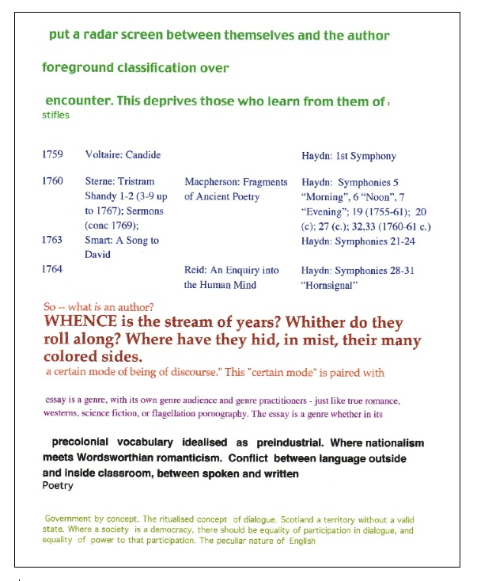

june - april 2011
June 25th
In a local secondhand bookshop years ago I came on Rhymes of the Road and Ballads of Ben Venue: Notions from Navvy-Land by H G Gallacher, a pocketsized booklet of seventy pages published in Oban in 1930. In the foreword Hugh Gallacher says: In presenting to a sometimes critical public this little compilation of verses, in the composition of which many a dreary hour was whiled away in solitary hostels by the author, who, to use the expressive phraseology of his workmates, often had “to keep life in by knocking it out,” we desire to make it plain that the writer labours under no delusions in regard to his abilities in the matter.
It was while in the employment of Messrs P MacBride & Co Ltd, Contractors, Port Glasgow, that most of the pieces reproduced herewith were written in the romance-haunted vicinity of the world-renowned Trossachs, a place which during our first week or so there, we knew as much about as a kangaroo knows of the internal construction of a Zeppelin.
Gallacher thanks the Callander Advertiser for its overall support, much of the contents evidently having appeared there. Said contents are mostly light sentimental stuff you might expect in a local newspaper, but the opening poem as reproduced here is different, reminiscent more of preceding work by Gallacher’s fellow navvy writer—also from Donegal—Patrick Magill.


June 20th

News of the death of the Parliamentary Square peace protestor Brian Haw yesterday coincided with the latest anti-Gaddafi Horror Story.This time the Observerstated that papers newly found in Misrata by Gaddafi’s opponents showed in “chilling detail” how he had intended to besiege it. One paper apparently stated "It is absolutely forbidden for supply cars, fuel and other services to enter the city of Misrata from all gates and checkpoints." Proof indeed for “crimes against humanity” charges if he survived to be brought to trial!
When Haw set up his peace camp in 1991, it was in protest against the economic sanctions imposed by the UK and American governments against Iraq. This is a list of some of the common everyday items “absolutely forbidden” to be allowed into the whole country. The selection was made in 1997.

But this was just some of the everyday items. Two years earlier in December 1995 the United Nations Food and Agriculture Organisation reported “More than one million Iraqis have died —567,000 of them children—as a direct consequence of economic sanctions. ... As many as 12% of the children surveyed in Baghdad are wasted, 28% stunted and 29% underweight.” The following year in October 1996 UNICEF reported “4,500 children under the age of 5 are dying each month from hunger and disease... The situation is disastrous for children. Many are living on the very margin of survival.” In April 1998 UNICEF reported again “Approximately 250 people die every day in Iraq due to the effect of the sanctions.”
There has never been discussion of charging anyone in Britain or America responsible with “crimes against humanity” for the effects of these sanctions. Instead, show trials of defeated leaders provide excuse for ostentatious moral outrage in despite of the accusers’ own much greater guilt. The complicity of corporate journalists here continues to be integral, and the stand of Brian Haw for years in Parliament Square was a reminder.
June 18th
I am reading in Brighton at the Sussex Poetry Festival in the Nightingale Theatre, Grand Central, Surrey Street, on Friday July 1st at 9.30. List of poets taking part in the two-day festival, including Peter Manson and Tom Raworth, is here
June 15th
I took out a dictaphone that had been lying in a drawer for years and decided to see what was on the microcassette. Included turned out to be this little made-up monologue from I think 1999. I don’t remember making it, so it was a surprise.
As usual with soundclips I have uploaded it to YouTube and embedded it here.
June 14th
and a two-step…


June 11th
Nato's Perpetuum Mobile

Nato bombing Tripoli Tuesday June 7th 2011
The bombing of Libya began, it was claimed, to prevent “massacres” planned to happen. Then there were reports of Libyan government aerial bombing on residential neighbourhoods actually happening. Then Russia pointed out their satellites showed not a single plane in the skies when this aerial bombing was supposed to have been taking place. Then there were supposed to be Libyan government helicopters bombing whilst maliciously daubed with the Red Cross. Then it was “cluster bombs” claimed by Channel Four News in one of its now commonplace “privileged scoop” affairs. That too was later buried, the Libyans never having had cluster bombs in the first place. Then, wondrous to relate, it was viagra handed out to Libyan government soldiers with intent to rape—presumably to accompany zimmers already distributed to soldiers who needed viagra in the first place. Amidst all this nonsense, it slipped out that six hundred Libyans fleeing Nato bombing had died in a foundered ship. Gasp. Nato brutality? An admission of something amiss? Nay!!! Two days later came the reassuring news that it was all down to Gaddafi “deliberately forcing people into unseaworthy vessels at gunpoint.”
Wearisome. Every day, every hour, every newsbulletin, every newspaper, for four months. And Al Jazeera become Nato’s spokesperson in the Arab world: its owner Qatar bankrolls Libyan opposition, acts as broker for commandeered though previously nationalised Libyan oil and financial assets; sets up “Libya TV” broadcasting propaganda from Qatar while Nato bombs the real one in Libya. Iranian Press TV, again, though no friend of Nato, from the outset sided with Islamic opposition in eastern Libya opposed to the secular government in Tripoli.
Then along comes Nato’s joker, Luis Moreno Ocampo, prosecutor of the so-called International Criminal Court, not to be confused with the international court in the Hague. This one acquired office nine years ago essentially to prosecute African leaders pursued by the West; at any rate, none but African leaders have been so pursued or charged. Yet nine years on and Moreno Campo has not made a single charge stick on anyone. His attempts in Sudan, as the BBC’s own legal man Joshua Rozenberg wrote in October 2010, caused judges to be "shocked by their falsity, both in fact and law". Again: “the prosecutor failed to comply with repeated orders to give defence lawyers the name of an intermediary who had assisted the prosecution by liaising with witnesses. Some intermediaries are alleged to have helped witnesses fabricate statements.” In that article Rozenberg wrote that a spell in the dock might teach Oreno Campo himself some basic principles of justice.
Forget that, move on six months, to March 2011. Up pops this prosecutor of African leaders once more, just after Nato has started bombing Libya. It’s “crimes against humanity” time, now for those “massacres” supposedly at the planning stage. These die the death, so to speak, but charges could still help Nato invade “to pursue arrest” if occasion demands. So up bounces Oreno Campo once again this month, this time with the already derided “evidence” of devilish soldiers with a rifle in one hand and a bottle of viagra in the other. I think it is supposed to be planned genocide by aphrodisiac. But nothing is too nonsensical for TV or corporate press to tell with a straight face. Feed the pigs. Into the trough with it! There’s a war on!
There must always be a war on. What would we do with our armaments otherwise? Don’t have an enemy? Of course we do. Terrorists. Terrorists are those foreigners fighting the troops who bombed and invaded their foreign countries merely to stop terrorism in the first place. Simple, really. An eternal loop.
Don’t get habituated. Even if singly, there’s millions of us, billions even. We are the ones not in power. If the bastards get you in the end, they still haven’t got your mind.
June 4th

The painter Alex Aitchison has died. I got the news yesterday in an email from a friend, to whom I replied thus, seemed all I felt like saying.
That's bad to hear about Alex. I remember asking him about his life sitting drinking together in Tennent's umpteen years ago. Quarriers, and I think his experiences there marked him. Some people don't get good cards played them, but Alex had a lot of folk who felt warm about him including me. He kept facing forward he would not fucking lie down, there was that in him in his own shuffling way. He was in the day you were in whenever you met him, a hell of a lot of people are not like that. They're somewhere else. Maybe he was condemned forever to be in the day he was in, but he didn't complain and always had something for the future on the go, from what i could gather. I'm sorry to realise I won't see him again.
June 1st

May 29th

Down in Kingston upon Thames spending the bank holiday weekend with son Stephen and his wife Lucy.
A volume of Chekhov short stories always a favourite of mine has been the 650-page selection translated by Constance Garnett. I used to refer to it as my “desert island” book. I gave it away as a wedding present to a friend once when I was a bit broke.
Now the collection is back, given me as “an early Father’s Day present”.
May 25th
My memoir of R D Laing reminds me I have another memoir on my hard disk. Years ago I took part in a BBC Radio Four programme in a series called Off the Page. Each programme in the series had three invited writers who would read a piece for about five minutes on the week’s chosen theme. After each contribution there would be a studio discussion amongst the three writers and a chairperson.
The theme of the programme to which I was invited to contribute was “My father”. The other two writers were the poet Simon Armitage and a biographer whose name I can’t remember. This was the short piece I read on the air.
My Father
To say anything about my father on a radio programme being broadcast throughout Britain seems an odd thing. In my memory I value most his silences, his quality of silence. He never once expressed an opinion on the things that I usually hear expressed as opinions on Radio Four or Radio Five. The idea of his being on a programme like this would have been a contradiction in terms. What were those terms.
That being is not the same as talking about it, or naming it. That the value of something is not determined by the quality of intelligent sounding opinion about it.
What do I value most in his memory. Climbing up and sitting on his shoulders when he came in from work, feeling the silver stubble on his face with the palms of my hands. What’s my saddest memory of him. Seeing him sitting alone in his chair when I came down the stairs the morning after my mother had died. There was an eternity of space round about him, as if his chair was surrounded by an eternal space.
He was an immigrant from Dublin to Glasgow when he was 14 and worked as a railwayman, as he always said to the fraction, 48 and a half years until his retiral. I remember that when he was going out to work, which could be at any time of his shift, he would be in clean dungarees and the black railway hat. I remember the smell of the hat, and the shape of the thin leather crown. My mother would have his sandwiches, or pieces as we call them, wrapped in the paper wrapping of a loaf, and there would be cold tea in a half pint dark bottle for him to heat up on the hotplate of his railway engine.
Before he went to work, my father would always go into the kitchen when there was nobody else there, and kneel on the kitchen floor resting his elbows on a chair and pray for a minute or two. He liked to be alone for that, though he never complained if you came in while he was doing it.
When he eventually retired from the railway, he was given a railway pension of ten shillings a week. His state pension was not enough for him to pay the rent and live on, so he had a rent supplement added to this state pension by the government. The ten shillings was then deducted from that rent supplement, so after 48 and a half years he received nothing at all from his job in the railway, apart from a watch given him by his union.
I only once read a few poems to my father, as I wanted him to understand what mattered to me. "That’s fine Tom" was about all he said after I read them, though I didn’t feel angry or hurt. I could see that he listened, and he had not tried to be nasty or snooty, which was not in his nature anyway.
In fact I probably owe my love of poetry indirectly to my father, though it was years after the event that I realised this. I was about sixteen when a friend sat an external exam for entrance to somewhere or other, and showed me the exam paper. On it was Stephen Spender’s poem, "The Express", which began:

and so on, about a steam engine leaving a station. I was hooked on the music of it, and from that defining moment in my life, it was to be poetry that I wanted to write. That it was about a steam engine the same as my father drove every day did not strike me at the time.
During my teens there was a while I looked down on my father, and wrote a letter to my best friend in which I poured out sarcasm in different ways. I never posted it, and my father discovered the letter. He was angry, and I could see that I had hurt him. I had been the first to stay on at school, the first to be helped to university, and so on. The usual. A long while later, visiting home after I was married, I told him once in conversation, "I’m really sorry that I wrote that letter." He was pleased, though as usual didn’t make a fuss of it.
After he died, I wrote a poem about my relationship with him, with my own young sons, and with my relationship with poetry audiences, having become a poet known among other things for writing poems in Glasgow dialect. It was a way of expressing my sense of regret about the way some things have to happen for growth, of identifying with my father in his being outside the official language in his own way, and finally the sense that the unknowable judgement of my own young sons lay ahead for me in the future after my own death. I called the poem "Fathers and Sons".

May 22nd
Someone emailed me asking my views about R D Laing in the light of the talk I gave at the Mitchell about 18 months ago on Laing and Beckett. I never wrote that up—I may yet some day—but I sent him from my hard disk this transcript of my responses to Bob Mullan included in his collection of interviews, memoirs and essays about Laing published as R D Laing: Creative Destroyer in 1997.
The first time I met Laing would be about 1969 at his place in Wimpole Street. I was going down to London for a reading and Tom McGrath suggested that I go and see him. I didn’t fancy doing that as I didn’t know him, and I really don’t like this visiting the shrine stuff... But Tom, who had been publishing my work in Glasgow, knew Laing personally and thought he might be interested in meeting me as well.
Anyway I phoned and remember the odd feeling of getting an answering machine. From R.D. Laing! (laughs) But we made an arrangement and I remember going up to this really wee room away up some stairs. He was very pleasant and open, talking about what was going on in his life at the time. Saying also that he was pestered at that time particularly with people—I think he said from America—more or less hoping to get their souls salved by return of post.
I didn’t see him again for ages, the next time I met him would be sometime in the early eighties, when I was doing a reading/performance in Camden at what was called a Sound Poetry Festival. There were people doing things mainly using tape recorders, and I at that time had hoped to perform work using stereo tape recorders and placards, tapes that included settings of work by Kierkegaard among other things... Anyway (laughs) the equipment they had available, which was about the size of the flight deck of the Concorde, was half track, and my tapes were quarter track, so I was kind of stuck in this place, and just gave a straight reading, of my dialect poems and other things.
Ronnie Laing came up at the end and introduced himself. He’d forgotten we’d met for that short time before, but we went for a drink. We got on well, I don’t really remember what we talked about to be honest, we just talked. I had things to say to him, it was quite important in my life, his work. So it was good from that point of view to be meeting him again, and I was glad he had now met my own work as it were. We had a drink then
I had to go for the late train back to Scotland. After that he contacted me a number of times when he was in Glasgow, usually when he was with John Duffy who lives quite near my own home. We would go out for a drink then back to John’s or my place.
I was making notes this morning as to what his work meant to me. I haven’t read The Divided Self for almost twenty years. It’s a book I never had in the house because I kept giving it away. I must have bought it three times and given it away three times. I still have The Politics of Experience , Knots, and the autobiography, Wisdom, Madness and Folly, which he sent to me when it was published. I can get a bit uptight when someone asks me directly “What do you think of my book?” and Ronnie asked me that the next time we met in Glasgow. I remember—I suppose it can sound a bit sentimental or a silly thing to say— but I I said the best thing in the book was the expression in the eyes of the wee boy on the cover. It was an early photograph of him. I don’t think he knew how to take that. I think he had hoped for a more critical response. (laughs)
I’d like to say about Laing’s work, it had a liberating effect on me, which directly affected my own writing. The Divided Self when I read it first about 1965 or so seemed to me part of a spectrum that included books such as Kierkegaard’s Either-Or, Beckett’s novels, Sartre’s Nausea, Robbe-Grillet, Gabriel Marcel’s Being and Having. What Laing got to the heart of was the nature of complicity in relationships within institutional structures, and the creation of supposedly self-invalidating “otherness” in people who do not “speak the right language”. His ideas have as much bearing on literature and the reading process as on psychiatry.
What Laing had to say about the status and nature of “scizophrenic” language as perceived by doctors and the relatives of a patient, had bearing for me on the perception of nonstandard English and dialect language in Literature. The dialect speaker tends to appear in a narrative like Laing’s patient in a hospital: there is complicity between author and reader that that speaker is “other”, that the user of such language cannot be the person who has written or who is reading the work. It comes down to language, often the nature of the Present Tense. Laing demonstrated how language is used to invalidate the access of others to an agreed universal present supposedly shared exclusively by people in related positions of power. In other words, to deny people their full existence.
It’s not that I agreed with everything he had to say, or liked all his writing. The second time we met I said to him “Your mother had a childhood as well you know.” I think it depends where you establish the boundary of the family structure when you criticise it, because if you establish it at her adulthood, then the mother enters the structure as an institution, and not as a person. That’s what I would say, the structure has to be large enough to include her childhood as well. If the mother is repressed and directing attentions at the child in a way that is loading that child with an awareness of consciousness that is, you know, nothing a child should be asked to bear....Nonetheless, she might have been abused as a wean, to be such a repressed figure, if that is the way to define her. I don’t know, I never met Ronnie Laing’s own mother. But in the autobiography she does not come across to me as a three-dimensional person. Ach, so what, at this stage? I certainly wouldn’t exhume Ronnie just to berate him as somebody who wisnae good to his mammy... (laughs)
Again, although his analysis of language and institutional power was so important, I had reservations about the idea that scizophrenic language, or the language of hallucination, the language of non-shared experience, was necessarily a healthy fuse against a dsyfunctional structure. Specifically, the approved metaphor of “journey” of breakdown in The Politics of Experience I had trouble with. It seemed to me that a vulnerable reader with incipient psychotic symptoms might feel they should just hold on as they were at the beginning of a journey of liberation. This could have very bad consequences if they thought the pilot was God, or the voice in their head. Ronnie when I raised this with him said that that was a misunderstanding of his position, that the provision of understanding help in a safe place should be part of the healing process (as indicated in the conclusions to Chapter Seven).
I mention these things not to join with the negative criticism that has been unleashed since he died, some of it the settling of old scores I’m sure. That there should even be talk of The Divided Self going out of print is extraordinary. I think the discrediting of Ronnie Laing since he died is part of a whole discrediting of, I don’t like the phrase “the person-centred” but there you are. It’s part of the way the Tories have been discrediting so much from the sixties as that was the last decade they weren’t in power. So it’s all the guff about “getting teaching back to those who know what value is, pouring value into those who don’t, and none of this bloody nonsense that we’ve all got value individually” - you know what I mean. The attack on Laing is part of the same thing, only it’s wrapped up in smokescreen anecdotage about Laing being drunk, presenting him as a boozer and a druggie, and therefore a poser.
His stand for the authentic in human relationships will be remembered long after the carpers have been forgotten. Thinking of him historically, he’s obviously part of a European existential tradition. But in relation to Scotland, I’ve been thinking about him recently in relation to James Thomson the Port Glasgow author of “The City of Dreadful Night”, and the West of Scotland in the nineteenth century. You can think of Laing in relation to Robert Owen’s New Lanark, to James Thomson’s “The City of Dreadful Night”, to Alasdair Gray’s Lanark, to Ian Hamilton Finlay’s garden at Stonypath. Places of authentic communal being, or allegories of inauthentic structure. Thomson wrote “The City of Dreadful Night” in 1874. His mother in Port Glasgow was a follower of the millenialist preacher Edward Irving in the 1830’s. I did a lot of research on that for my biography of Thomson. With the inruption of the industrial revolution, and the alienation of relationships, models such as the millenarian New Jerusalem were longed for as a place where those who had been self-objectified as other could come into their own at last...
But reading about that millenarian fever of the 1830’s, what actually triggered it in the West of Scotland was the preaching by a local minister of the Universal Atonement as against the Calvinist doctrine of the Elect. You can see this in political terms of the time as the House of Commons versus the House of Lords (laughs)....
But looking at the Universal Atonement that was being preached in the 1830’s, what it meant, it was the validation of the specificness of people’s ontology: in that, being in the Present, Christ was presently available to them. And therefore, in Christian terms—you know, in Christian terms, I’m not a Christian—they were capable of redemption. In other words, in that sense, they were universally valid, in their specificness—as distinct from the preordained, or I would call behaviourist, notion of the Elect. So I see Laing within that tradition as well. In a sense it’s a kind of universal atonement he’s talking about.
May 17th

May 14th

May 11th
This was the fifth and last in my sequence of contributions to the folio Fragments published by Edinburgh Printmakers Workshop in 2003, a joint venture between myself and the artist Calum Colvin. This poem appeared in slightly less formal presentation (not every line beginning with a capital) in access to the silence.

The complete folio is available to galleries for hire from Edinburgh Printmakers Workshop. Last time I saw it up was at the Arnolfini in Bristol where I was doing a reading.
May 10th
This week actions and demos against cross-party supported hired benefit-cutters Atos. List and times of actions here
Glasgow Thursday 12th. Report on Edinburgh small demo yesterday here
May 9th
Another two of my contributions to the folio Fragments.
(3)

(4)

May 7th
These two document images were used by Edinburgh Printmakers Workshop to produce large prints to accompany and mirror prints by the visual artist Calum Colvin about eight years ago. Ossian was the focus of Calum's idea at first when Calum and I first discussed the projected suite of five prints each. The finished folio by us both was published under the title Fragments.
I'll put the other three templates up in the next few days.
(1)

(2)

May 5th
Photographed in my room sometime late nineties. Published access to the silence.

May 3rd
Theodore Ritch was born in Odessa in 1894. Leaving Russia in 1917 he had a successful career in Europe and America as an opera tenor. He retired to teach singing in Paris, but was arrested there in 1943 and sent by train from the concentration camp at Drancy to one of the principal camps in Poland. He died in the vehicle en route.
Theodore Ritch sings "E Lucevan le Stelle"
Josef Schmidt was born in 1904 in a part of Romania and his voice first attracted attention as cantor in his local synagogue. Sent to study music in Berlin he became internationally famous making many records, with sundry Europe-America tours, and singing as lead in a number of films. Still he could not live in Nazi Germany, and was further forced in 1940 to flee occupied France for Brussels. But projected escape to America was thwarted as that route had been closed to passengers before he could take advantage of it. He managed to get to Switzerland but despite his fame and that American tours had made him possessor of an American visa, he was interned in harsh conditions in a refugee camp. Complaints of chest pains went unattended. He died of a heart attack in November 1942 aged 38.
Josef Schmidt sings "Non piangere, Liù" (recorded 1934)
Ottilie Metziger was born in Frankfurt am Main in 1878. She became a leading contralto of the first two decades of the twentieth century, being first contralto at the Hamburg Opera from 1903 to 1915 singing alongside Enrico Caruso and other great names of the day. After a further career in Dresden Opera and appearances at the principal European operatic houses, she spent two years in America between 1922 and 1924. Returning to Germany where she began teaching music she was forced in 1934 to flee Berlin. She settled in Brussels but there she was arrested in the street in 1942 and sent to Auschwitz where she died on a date, it is thought, sometime in February 1943. She would have been 64 at the time of her death.
/p>
Ottilie Metzger sings Schubert's "An die Musik" (recorded in Berlin in July 1910)

May 2nd
The recording on Friday was a success. Which is to say, I gave it some kind of laldy in the room for two sessions over something like 80 minutes. And the response was favourable, people seemed well pleased and talking to me afterwards and so on.
But. I hate the fact of being recorded in the presence of people when reading my poems. In terms of “response” that has been much deeper in readings I have done over this past couple of years than it was on Friday. Not that I have given a damn about the “response”. It is and always has been just being in the presence of people in a kind of dialogue, inhabiting the words I know, “playing my tunes” as I think of of my Glasgow poems, and finding out the kinetics of the thought of various poems supposedly about “politics”, setting out to the end of them the way I write essays, which is to say setting out to find out how I get to the end.
Friday was different. It was part of a MayDay series of events that was going on in the STUC advertised through the same union bodies who had been at an event 18 months ago where I gave a rowdy ten minute contribution in among singers and comedians. Fine, and no inauthenticity there; but a long way from me talking about haeccitas and my kinetic formal poems at the CCA ten days ago. That wasn’t stuffy, at the end of it I was able to read nora’s place in a way I had never read before and will never read again: the whole concept of “thisness” in relation to a person had, to myself, been contextualised: so nora was revealed to me, more than to anyone, as something I fell into reading in a way that I was discovering it as I read it.
And that can only even possibly happen when nothing is being recorded. Where there is no possibility of being self-objectified, and the transitoriness is what counts. Being versus having, as I have said all me life now. Of course I’m a trooper enough to have put on a good show on Friday. But it wasn’t me. It was brave after a fashion, I tell myself. But for the first time in my life I think, I had to be “a performer”. And I rose to it, I performed well. Even, in poems like “A Fair Cop” I did get into it, released it as it came. And the poem to Sonya and some others, could be declaimed-in-the-presence of, so to speak.
But a real reading for me is one where I do what I can do then, as I walk from the stage, the whole flushes out of my mind and I forget about it all together. Each reading for me is a new one, and I never know what i will read. Sometimes, as in St Ives some months back, I will step into my poems as the only safe space for miles around, at least to be in the presence of the words. A poem I wrote that was in access to the silence has it:

The respite, that “present” wasn’t available to me on Friday, it just couldn’t be on an occasion where folk were there “to be present at a recording”. It wasn’t a place where my inmost feelings could venture into the words, safe in their transitoriness in form. So there was no place for nora, certainly, though I read her “well enough”.
I’ll edit down the CD to whatever comes over best, maybe subsititute another nora or whatever from what I have already recorded. What I say here by the way I know will be absolutely unfathomable to some people who were there on Friday and who I know really enjoyed what happened. I gave a good performance overall. It was "a good night out". But my work isn’t about “peformance”, though it might seem performatory. in fact that is precisely why I usually forbid actors reading it on radio or TV. What I did enjoy reading (and naturally a performance) was my version of some of Brecht’s Mother Courage songs. In the absence yet of permission from Germany for Smokestack to publish my translation of the play—only one British publisher has been given permission to publish the play in the past half century—it was a chance to let some of my translation at least be heard.
April 28th
Still some tickets left for my reading tomorrow Friday 29th at the STUC centre, the old converted school at the top of Woodlands Road. Some may know the building for the Stand comedy venue, though the event won’t be in that room but the main central atrium. You can get in at the door though a lot of the tickets are away so if you want to buy in advance you can get them online here.
The evening is organised by Fair Pley Ltd who are recording it to issue it as a CD later this year. There’s a few things going on in the centre over the weekend to do with MayDay and as an alternative to the unmentionable event in London. I don’t usually plan in advance my readings, it’s not the way I work, but I’m pretty certain I will give my Mother Courage songs an airing as well as a fair selection of my work from the sixties to date.
There will be a little show of some of my posters, some of which I think can be bought or at least ordered. I will also project some visual work here and there to vary it or even give my voice a little rest. I’ll do two sets with an interval.
There will be a bar, and Fair Pley have arranged a curry buffet before the show so that people don't have to miss their teatime grub. Doors open 6.15 pm, my reading kicks off at seven.
April 27th

April 26th
Nearly a fortnight since we came back from a week’s holiday in Fuerteventura. A week that proved wonderfully restorative for dodgy Glasgow lungs like mine; and being without British “news” for a week was like a Victorian colonic for the mind. Before we left for holiday, my attempts to avoid the mediawide orchestrated anti-Gaddafi hate-garbage had been breached by a headline the morning after 140 Cruise missiles had begun 28-country Nato's onslaught on the same Libyan government forces previously described as “kept deliberately small in number lest they should overthrow their leader.” The headline which caught my eye as I queued in my local Saintsbury's read “Top Guns 1 Mad Dog 0”. British racism and colonialism as alive and well as ever in its hack “journalists”.
A deal of the Left backed the Libyan protestors at first as a popular rising, but came to realise that whoever the mass of the people demonstrating initially were, their leaders are now a “council” of American-Nato implants. Men like military leader Khalifa Hifter, understood to have become a CIA agent after twenty years in Washington; or their so-called “finance minister” Ali Tarhouni just back from 26 years as senior business lecturer in Washington University, where his wife is in the Attorney General’s office. Tarhouni arranged the seizure of the Libyan nationalised bank and oil assets which Qatar agreed to market. Just like that. Qatar had patched up its difference with Egypt, so their Al Jazeera station could get back into Nato line, forgetting Egypt protest and making its anchor reporter in Libya the ex Fox News Anita MacNaught, there with all the other Western hacks in Benghazi practically doubling that city’s population to broadcast endless one-sided rumour and "reporting".
Mass shooting of demonstrators in Bahrain, forget it. The home of the Fifth Fleet is the home of the Fifth Fleet. The “Arab Dawn” well and truly flushed down the lav. Egypt under pro-Nato Tawani has banned strikes and the very demonstrations that were two months ago hailed as symptoms of the people’s desire for freedom. Bluster about “human rights” and the usual “fearless” so called war-reporting against “tryanny” is now focussed exclusively - and endlessly - on Libya, Syria and Iran. Which is to say, the three countries in the Meditteranean not on side with the Nato alliance. And that is how “the Arab Dawn” has been dealt with, and is being dealt with. The "desire for freedom" is now a three-country affair. Read all about it. You might as well. You have no choice.
Unless the token scattering of leftwing commentators like Seamus Milne, or if you can be bothered, through some dogged work on the net. I recommend the Asia Times correspondent Pepe Escobar whose articles on the Middle East since January can be seen here Worth reading from a point of view in short supply in these parts.
April 19th
An online emag emailed my website to ask if I could give them a thousand words about the royal wedding. A picture tells a thousand words, so I have sent them the following.
No thanks!

April 17th

April 15th
Have agreed to read tonight at a CND fundraising social in a place called McPhabbs, Sandyford Place on Sauchiehall Street. Not a CND member myself, but any opposition to any part of the arms industry I won’t take issue with. I have never been a fan of the halberd.
April 5th
I'll probably be away from the internet until April 14th. On that day I should be at the CCA in the evening for an event organised by the Scottish Writers Centre where I'll show projections of slideshow poems and visual work and read from outside the narrative.
April 3rd
Some time ago Leslie Crook wrote a poetry sequence “The Book of the Dead” about life in a psychiatric hospital. He had a few copies typed up which he left anonymously around secondhand book shops in the west end of Glasgow. Then about 18 months ago he paid for Clydeside Press, Glasgow’s radical community printer publishers, to produce a 100 copies this time bearing his name.
I like and admire the sequence very much, and thank Leslie for consenting to let me publish it here.


April 1st
The UK Parliamentary Attack on the Sick and Disabled
Some Local Counter-Organisation and Self-help.

Demonstration by Disabled Rights Group Black Triangle at Atos Scottish headquarters in Livingstone, January 24th.
A similar demonstration was held at the Atos offices in Cadogan Street Glasgow on February 23rd.
A friend who accompanied someone with mental health issues to an Atos disability reassessment interview found the interviewer to be sitting behind a computer screen out of eye contact. Answers to the standard questionaire were clicked into the computer. My friend attested to the interviewer (who had a heavy German accent which made the situation slightly more surreal) as to the reliability of the patient’s answers and his day to day fluctuation in continuing severity of illness. Notice was posted to the claimant subsequently that his benefit had been terminated. He went through the process of appeal. Fully nine months later he was called to the appeal interview. This was heard before what seemed to be a retired psychiatrist and a retired social worker. On conclusion he was asked to wait outside the room then was called in after ten minutes to be told that his appeal had been upheld.
The questions in the initial interview are not accidentally loaded in their narrowness and their inability to take qualificatory answers. They are so loaded because they were designed using purely financial, not medical, targets set by the previous government— the Labour government under Work and Pensions minister James Purnell and his successors such as the recently ermined “Lord” Hutton, helped across the floor of the House after the elections to provide the Conservatives with his template for cutting public pensions. The target is to cut benefit spending by billions of pounds, indeed, as Purnell and his chums established, to remove the words “benefit” and “entitlement” from the equation altogether. An unknown number of claimants have disappeared from records. Some are known to have commited suicide, like the Edinburgh poet Paul Reekie near to whose body last June were found letters including the disallowance of his housing and incapacity benefit. The press as always are loyal to measures stigmatising the poor and unemployed: “94% of benefit claimants shown to be cheats” was a headline in the Daily Mail, where else, in January this year. Since 40% of those who go to disability appeal have it eventually upheld this is taken as evidence by Labourites and Liberals small and large “L”, that the system is decent at heart and can catch the really needy. Nonsense. It simply shows that the financial targets have been set to disallow 60% of that percentage of the disallowed who have been capable and willing to survive the long wait for an appeal to be heard.
So, no help to the sick and unemployed from the Parliamentary parties, who have united in attacking them. Not that they would admit it in plain words. They prefer sweetsounding mealy ones. However some non-party local groups have been making protest and trying to help one another. The Edinburgh Coalition against Poverty have been involved and their site has useful information and links to others for those caught up in having to claim help or to work out what to do when summoned to interview. Another small organisation of Glasgow anti-benefit cuts people are on the web here where you will also find an email address. And a UK-wide network of organisations trying to help one another and take some kind of public action can be found here at a site called Benefit Claimants Fight Back
Many of these including the Scottish groups will be taking part in the third National Day of Protest Against the Cuts on Thursday April 14th. I’ll post such word as I am given of Scottish action taking place, though those interested can make their own contacts using the links preceding.